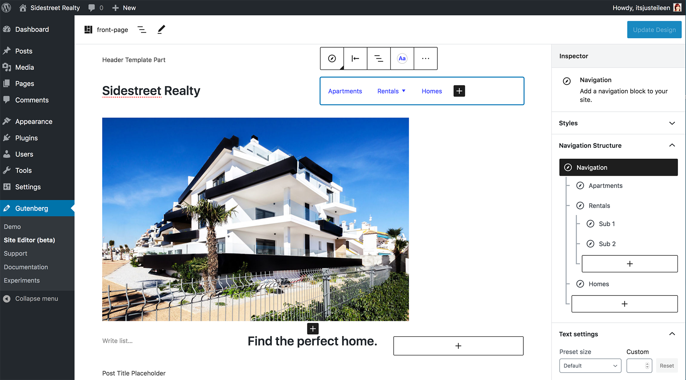

Nothing is set in stone. The more we test and iterate the stronger the experience will become.
Full Site Editing

Fragment Styles
There's different types of fragments, like:
Full Site Editing
Templates CPT
You can create your template CPT directly in the editor with blocks, no need to edit a file. This template takes precedence over your theme’s single.html file.
Full Site Editing
Post Blocks
You can create your template CPT directly in the editor with blocks, no need to edit a file. This template takes precedence over your theme’s single.html file.